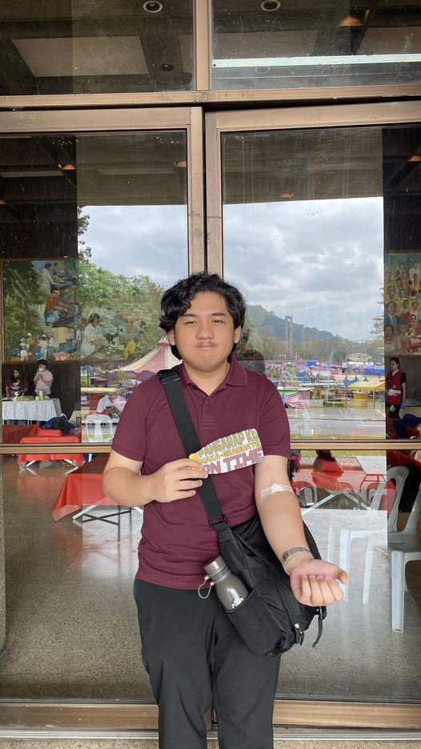

Previous Projects
Student Grade Management System
CMSC 12 Pokemon Themed Hangman Game
Technical skills
Programming Languages: Python, C, JavaScript
Management Skills: Git, GitHub, Trello, Agile
John Lim Natividad is a BS Computer Science undergraduate student from the University of the Philippines- Los Banos with a passion for emerging technologies and project management methodologies.